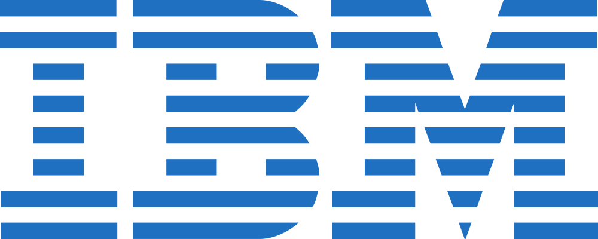

Summary
Software engineer with 15+ years of experience and proven success in driving the design and development of software systems. Seeking high impact IC positions / technical leadership.
I've led the design and development of both user-facing products as well as internal tools and backend infrastructure at high scale in companies like Google and Wix. In addition, I've been doing public speaking at international conferences (JEEConf, Codemotion), local meetups and guest lectures at Ben Gurion University. Co-organizer of Scalapeño 2018, the largest Scala conference in Israel.
Professional Experience
 Senior Software Engineer (L5), Google (2020-2025)
Senior Software Engineer (L5), Google (2020-2025)
- Individual contributor in multiple projects in Search and Shopping: COVID/Vaccines stats, Autos Search, Shopping in Japan and EEA.
- The work involved the design and development of features across the Search stack - from data acquisition, indexing, serving, UI and quality analysis.
- Led the productionization and launch of key features, which included setting up robust logging, monitoring and alerting systems. In addition, I managed live A/B experimentation, analyzing critical launch metrics and driving final release. These features impact hundreds of millions of users daily.
- Served as technical lead for a few of the projects in aforementioned teams, mentoring junior developers and interns. This included guidance, design and code review, enabling them to achieve meaningful impact in the team while delivering on the projects' OKRs.
Senior Software Engineer, Wix.com (2015-2020)
- Lead backend developer of several strategic products within Wix’s Ascend suite (CRM): Wix Forms (team lead), Wix Invoices (team lead), Wix Contacts, Wix Inbox. This included the design, development, maintenance and monitoring of various microservices. In addition, I helped grow the team by onboarding and training new developers.
- Created a core event-sourcing infrastructure, adopted by several teams. This infrastructure provides a full audit trail of domain events to microservices using it. Implemented CQRS principles to achieve read/write path decoupling, resulting in independent scaling and the development of flexible, optimized read models (projections).
- Led the design and initial implementation of Greyhound: an open source high-level SDK for Kafka (announcement). Greyhound is used by almost all microservices at Wix that interact with Kafka.
- Creator and maintainer of internal tools: RPC console for API discoverability and introspection which is used across the company.
- Led hands-on workshops and trainings on various topics, primarily focusing on functional programming, testing and databases.

Software Engineer, IBM / Trusteer (2014-2015)- Development and maintenance of Trusteer’s Pinpoint for malware detection, under IBM’s security division.
- The role included both UI-less frontend work (detecting and collecting data from potentially infected users’ browsers), and high scale backend systems to analyze and act upon this data.
Fullstack Web Developer, Babylon (2008-2014)
- Lead developer of custom systems used for business intelligence. These tools provided critical insights and were used widely across the company, from media buyers to the CEO.
- Collaborated closely with the company's CIO, business analysts and DBAs to translate high-level business requirements into robust, data-driven systems.
Fullstack Web Developer, KCS (2007-2008)
- Implementation of open source solutions for custom websites / e-commerce systems (WordPress, CMS Made Simple, etc.).
Education
B.Sc. Computer Science, Magna Cum Laude
The Academic College of Tel-Aviv, Yaffo2011-2015
Public Speaking and Publications
- Building Event Sourced Systems with Kafka Streams (slides / video / code / article) - presented at Codemotion Milan (November 2018) and JEEConf Kiev (May 2018)
- Monadic Parsing in Scala (video) - as part of "Wix Engineering Tech Talks Show" series
- TDD for the Curious (Hebrew) (article / video) - published on Geektime, one of the largest tech blogs in Israel
- Functional Testing with Tagless-Final (article)
- Creating a dead simple CountDownLatch with ZIO (article)
- Who Needs Redux Anyway? (article)
Skills
- Languages: Rust, Scala, Java, C++, TypeScript / JavaScript, Clojure, Python
- Architecture & Infrastructure: Distributed Systems, Microservices, Event-Driven Architecture, Event Sourcing, CQRS, Kafka, Databases (SQL / NoSQL), Kubernetes
- Frontend & Web: React, SolidJS, CSS, Web Performance Optimization, RPC/API Design
- Leadership: Technical Lead, Mentorship, Public Speaking, A/B Experimentation